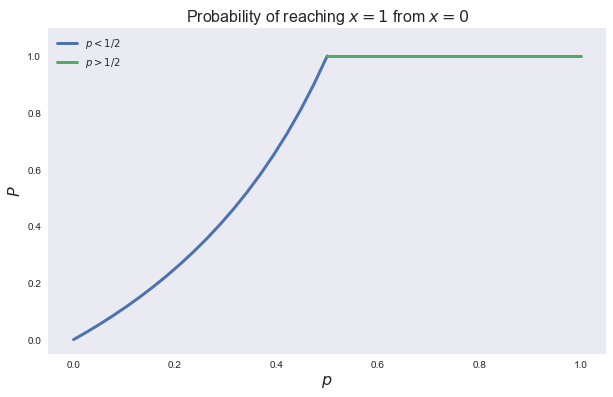
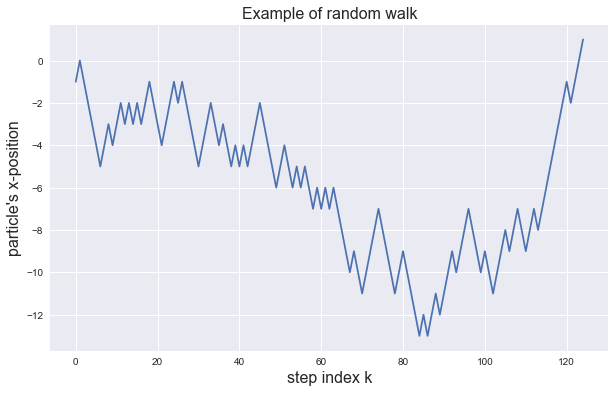
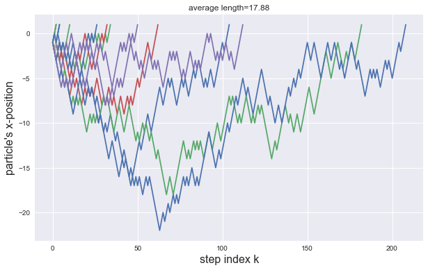
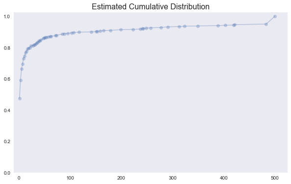

Digital Signal Processing¶
A signal represents a quantity that varies in time.
A periodic signal is a signal that repeats itself after some period of time.
A transducer converts a signal from one form to another.
The period is the duration of a cycle.
The frequency is the number of cycles per second.
import numpy as np
import numpy.random as npr
import pandas as pd
from pylab import mpl, plt
plt.style.use('seaborn')
plt.rcParams['figure.figsize'] = (10, 6)
from __future__ import division
from collections import Counter, OrderedDict
import itertools as it
import networkx as nx
def walk ():
'''starting at x=0, step left/right with probability 1/2 until x=1'''
x = 0
while x != 1:
x += npr.choice([-1, 1])
yield x
def walk (limit=50):
'''limited version of random walker'''
x = 0
while x != 1 and abs(x) < limit:
x += npr.choice([-1, 1])
yield x
def nwalk (limit=500):
'''limited version of random walker. Only returns length of path, not path itself'''
n = x = 0
while x != 1 and n < limit:
x += npr.choice([-1, 1])
n += 1
return n
fig, ax = plt.subplots()
p = np.linspace(0, 0.5, 20)
ax.plot(p, p/(1 - p), label=r'$p < 1/2$', lw=3);
ax.plot([0.5, 1], [1, 1], label=r'$p > 1/2$', lw=3);
ax.axis(ymax=1.1);
ax.legend(loc=0);
ax.set_xlabel('$p$', fontsize=16);
ax.set_ylabel('$P$', fontsize=16);
ax.set_title('Probability of reaching $x=1$ from $x=0$', fontsize=16);
ax.grid();

npr.seed(123)
s = list(walk())
fig, ax = plt.subplots();
ax.plot(s);
ax.set_ylabel('particle\'s x-position', fontsize=16);
ax.set_xlabel('step index k', fontsize=16);
ax.set_title('Example of random walk', fontsize=16);

s = [list(walk()) for i in range(50)]
len_walk = map(len, s)
fig, ax = plt.subplots()
for i in s:
ax.plot(i)
ax.set_ylabel('particle\'s x-position', fontsize=16);
ax.set_xlabel('step index k', fontsize=16);
ax.set_title(f'average length={np.mean(list(len_walk)):0.2f}');

len_walk = [nwalk() for i in range(500)]
lw = pd.Series(Counter(len_walk)) / len(len_walk)
lw = lw.sort_index()
fig, ax = plt.subplots()
ax.plot(lw.index, lw.cumsum(), '-o', alpha=0.3);
ax.axis(xmin=-10, ymin=0);
ax.set_title('Estimated Cumulative Distribution', fontsize=16);
ax.grid();

def estimate_std (limit=10, ncount=50):
'''quick estimate of the standard deviation of the averages'''
ws = np.array([[nwalk(limit) for i in range(ncount)] for k in range(ncount)])
return (limit, ws.mean(), ws.mean(1).std())
for limit in [10, 20, 50, 100, 200, 300, 500, 1000]:
l, a, s = estimate_std(limit)
print(f'limit = {l}\taverage = {a:0.2f}\tstd = {s:0.2f}')
limit = 10 average = 4.15 std = 0.55
limit = 20 average = 6.25 std = 1.08
limit = 50 average = 10.00 std = 2.36
limit = 100 average = 15.55 std = 3.52
limit = 200 average = 21.59 std = 7.20
limit = 300 average = 25.60 std = 8.70
limit = 500 average = 32.20 std = 12.71
limit = 1000 average = 47.38 std = 21.40
class Graph (nx.Graph):
'''operations assuming `pos` attribute in nodes to support drawing and manipulating path lattice'''
def draw (self, ax=None, **kwds):
File "<ipython-input-8-b1c3eee59536>", line 4
^
SyntaxError: unexpected EOF while parsing